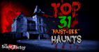
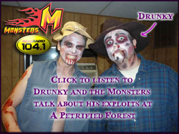
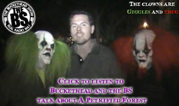

Reviews
2018 Shout-Outs
The forest may look like a normal part of Mother Nature, but the secrets within may have you
regretting your journey through it. All through the trees are whispers from lives of a bygone era,
pushing you closer and closer to a massive haunted house. Read the rest:
The 10 Best Haunted Attractions
in Florida!
2017 Mentions
ViewFromTheCheapSeats returns to one of their favorite local haunts in Central Florida
 #5 Fan-Voted "Must-See" Haunts in Florida
#5 Fan-Voted "Must-See" Haunts in Florida
Check it out:
2017 Top Florida Haunted Houses List

#31 in the 2017 US Top "Must-See" Haunts
Check it out:
2017
31 Top Haunted Houses
Past Mentions
A review from The Scare Factor Haunted House Review Site! Check it out:
A Petrified Forest
Review 2014
Pictures: People getting scared at A Petrified Forest! Look if you dare:
Orlando Sentinel-Pictures: People getting scared at A Petrified Forest
ScuRRyFace Haunt Reviews "You walk into a giant barn and immediately the actors start coming for you. They seriously waste no time. From there you weave through several different scenes from the home, nasty swamps that could've fooled me for being a real one, a crashed bus and even a backwoods carnival that had quite possibly the coolest scare in the trail." READ MORE
Florida Haunted Houses "Best haunt I've been to in many years! First time and now lifetime customer! The laser swamp area was off the chain. I got to scare people in the swamp on a backstage tour. Can't wait for next year!" READ MORE
Our Kid's Day made the USA Today Travel 10Best! Check it
out:
ORLANDO'S HALLOWEEN BOTH DARK
AND LIGHT
 A shout-out from USA Today Travel Destinations! Check it out:
A shout-out from USA Today Travel Destinations! Check it out:
Scared to Death in Orlando
Read the review by Local Orlando - The Daily City
Halloween Review: A Petrified Forest

Drunky the Bear and the Monsters in the Morning (Real Radio 104.1) talk about A Petrified
Forest

Buckethead of the BS (Real Radio 104.1) talks about A Petrified Forest
"A Petrified Forest is the best-kept Halloween secret in Central Florida...
This is AWESOME!"
The Ledger's review, from 2010.
The University of Central Florida's Knight News' review, from 2010.
Orlando Weekly review, from 2011.
Testimonials
This is a great small haunt I loved the set design and the energy from the scareactors is on point. I love that you can have an interaction with every single scareactor in the trails because you are put through in small groups ( one house I went through with a group of 8 and the other one was just my group of 3 until about half way through when another group met up with us) and that gives you more personal interaction something that I really enjoy from a haunt or from any sort of theater experience period. Keep up the good work guys! Everyone that works here was awesome and provided a truly great experience. Thank you!
- Facebook Review: 10/7/2017
What a fantastic event! What a fantastic event! Most small haunts in Florida are just that: small haunts. However, A Petrified Forest takes it a few steps further and made an actual event with two haunts, food trucks, live music, and actors to mingle with everyone. I actually had a reason to hang out after I was done with the event, which is something that other small haunts could learn from.
Now, as for the haunts themselves...they both had a very decent length to them, at least as long as if not longer than most hhn houses. They're mostly outside and very well done....the props, theming, and actors are all fantastic and do a great job. There are scenes that will make your jaw drop, and the Scareactors truly appear to love their jobs. However, my only complaint is the lighting...I went on a "lights out" night so I knew to expect bad lighting, but I missed a lot of great scares due to it. Despite not being able to see very well, I was still able to see enough to be impressed. I recommend seeing both trails to anybody..... they both have great scares and a few incredible scenes.
I paid for both trails plus the backstage tour. To be honest, if not for the backstage tour I may have rated this a 4....only because of the poor lighting. But the backstage tour changed my opinion, and showed me a lot of details that greatly increased my appreciation of the event. I really wish I had the time to come during a regular night to see this fantastic haunt fully lit.
The scares and some effects were definitely on par with the big events, and the friendly staff and witty Scareactors plus the incredible backstage tour all came together to make a great experience. I definitely recommend this to any haunt fans!- Facebook Review: 10/6/2016
It was our first time We enjoyed it a lot. I think is a family oriented place, just in case you where planning on taking the fam. Its like a little halloween carnival. Employees are very nice and welcoming starting from the staff in the parking section to the staff inside the event. Honestly is worth it. We did only one trail but next time i think we will go for two. It was fun and scary. They have food trucks and desert trucks.They also have an amazing old fashion lemonade stand that is amazing " best lemonade i have tried". Overall is a great place to go to this time of the year.
- Facebook Review: 10/31/2016
A Two Person Perfect Fright! A Petrified Forest was the best Haunted House I have ever been to from start to finish. Go Eclipse Night! There's nothing like trying to grip that glow stick! Also pay at the door to avoid the extra $2 online fee unless you are going a busy night.
First parking was simple they direct you exactly where you need to go with friendly guides. As you exit your car you are surrounded by fog and can hear the screams of the people who have gone on the trail. Ticket lines were short with many booths open. When we got inside bathrooms were conveniently located at the entrance. (A high class one I might add not just port a pottys.) Go before you enter you will need to.
On the eclipse night they can touch you so be prepared. We had people tickle our necks, reach for our ankles, drop our hoodies on our heads, and literally back us into a wall for our glowsticks. I suggest both trails they are both unique to one another and fantastic scares. It is a very interactive house. Inside there were interactive unique scares such as going through a school bus, clowns flying on you, and pushing through and under giant tight space bags. If you have a choice between Horror Nights or this pick A Petrified Night. There's nothing like it out there.- Facebook Review: 10/30/2015
We enjoyed this very much! Its low key and not very large. But, the haunted attractions are scary and the actors interact very well. This is not for people who like the larger places, like Universal. This is more for people who like a home town atmosphere, simple yet very scary scenery and outdoor haunted areas. This was our first time here and we will be back. We also went to Halloween Horrors on this trip, and we actually liked this better.
- Trip Advisor Review: 10/24/14
Share Your Review
Where you terrified of the trail?
Where you scared by the haunted scenes?
Or were you scaring everyone else on the Backstage Tour?
Share your review with us on Facebook and we may add it to this page!
Location
We're located on S.R. 436,
just 1/4 mile West of 17-92
1360 E Altamonte Dr,
Altamonte Springs, FL 32701
View Larger Map
Ticketing
Buy tickets online through our

Ticket Leap Event Page!
Ticket Booth opens at 7:30pm
Rating
The haunted scare trail, as with all of our events, is rated PG-13. Children 12 and under must be accompanied by an adult.